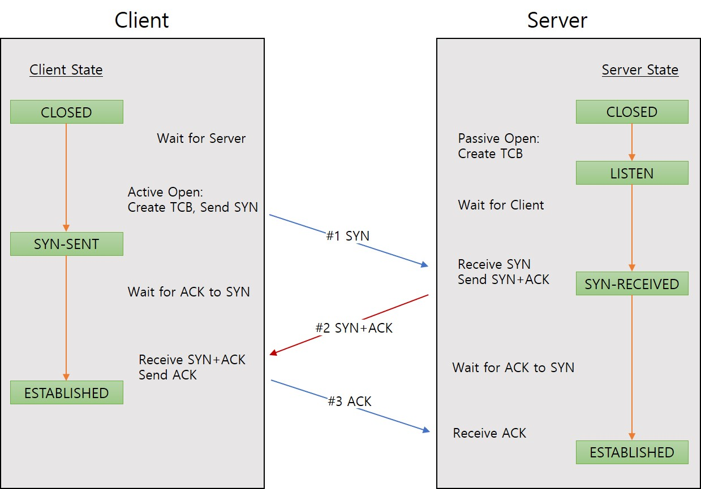

4. Message Sequence
4.1. Establishing a Connection (TCP 3-way Handshaking)

[STEP #1]
The client sends a SYN packet to request a connection to the server. after sending the SYN packet, the client state changes to SYN-SENT to wait a SYN+ACK.
[STEP #2]
When the server receives the SYN request, the server sends ACK with SYN flag, that has a purpose to confirm the SYN and wait an ACK of the client. The server state will be changed to SYN_RECEIVED at the last.
[STEP #3]
After the client sends an ACK to the server, a connection is established between the client and the server and the data transmission is available. The both client and server state are ESTABLISHED.
4.2. Terminating a Connection
[STEP #1]
The client sends a FIN packet to terminate the existing connection with the server.
[STEP #2]
The server sends an ACK packet to client to confirm the FIN and waits for finishing some data exchange to the client under the TIME_WAIT state (server state).
[STEP #3]
When finishing the data exchange to the client, the server sends FIN packet to client to notice the existing connection was closed.
[STEP #4]
The client sends an ACK for the FIN of the step #3.
What if some data packet of the server on the step #3 is delayed caused by a routing problem of packet missing? So, the data packet can be arrived later than FIN of step #3, the data packet that arrived after the connection is closed, will be dropped or missing. Client keeps the existing connection with TIME_WAIT (client state) for some period (default 240 seconds) against this case even if the client receives the FIN packet.